For this assignment we were tasked to create 3 different cookie cutters by:
1) Importing shapes from images
2) Import those shapes into Rhino
3) Lastly, build a solid model using those curves
My Steps
I decided to create my shapes based on the PacMan game characters, so first step was importing this PacMan family photo!
From here, I blew up the image size, grabbed screenshots of my favorite characters, and imported them into Adobe Illustrator shown below:
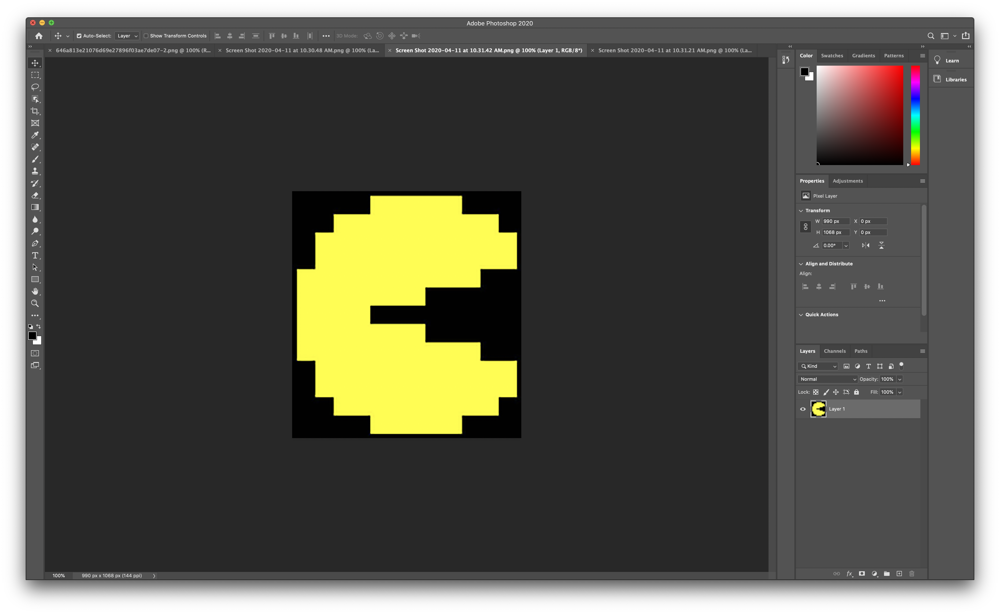
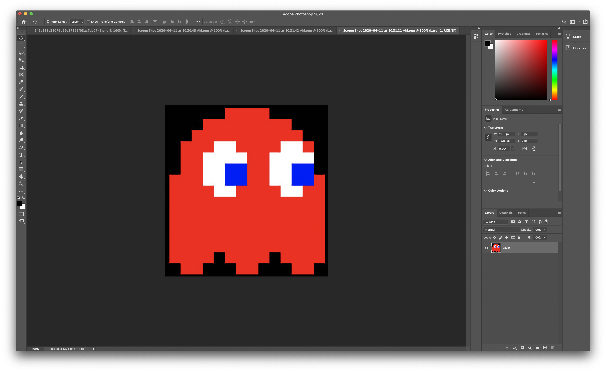
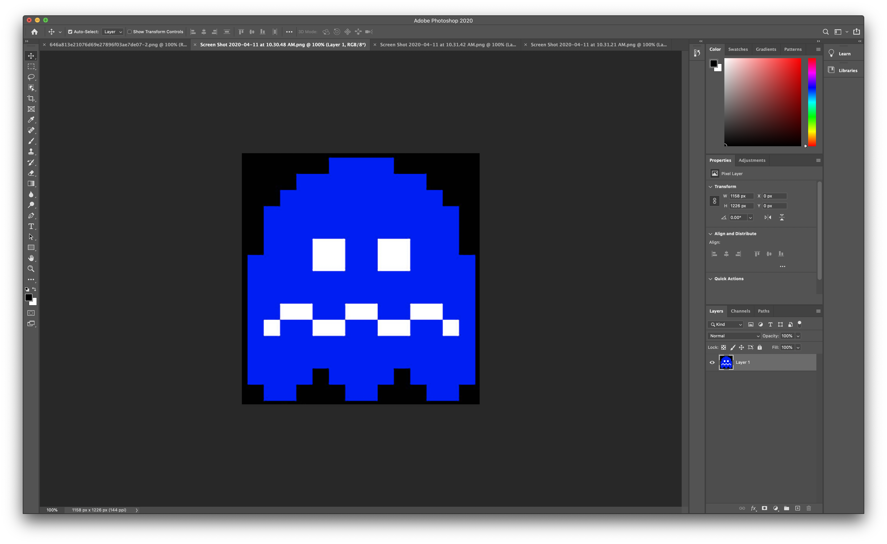
I continued that by turning the images to B&W and tracing them like shown below. Adobe illustrator files
Micro steps taken here were: Invert color + Selective coloring + Levels + B&W + Contrast + Filter->Blur + Image trace
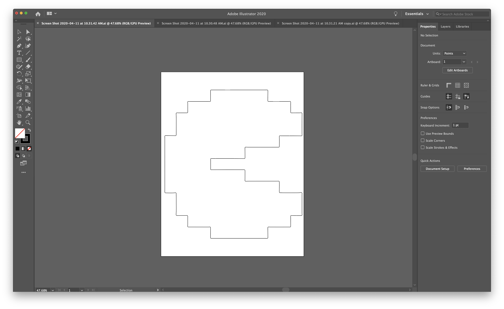
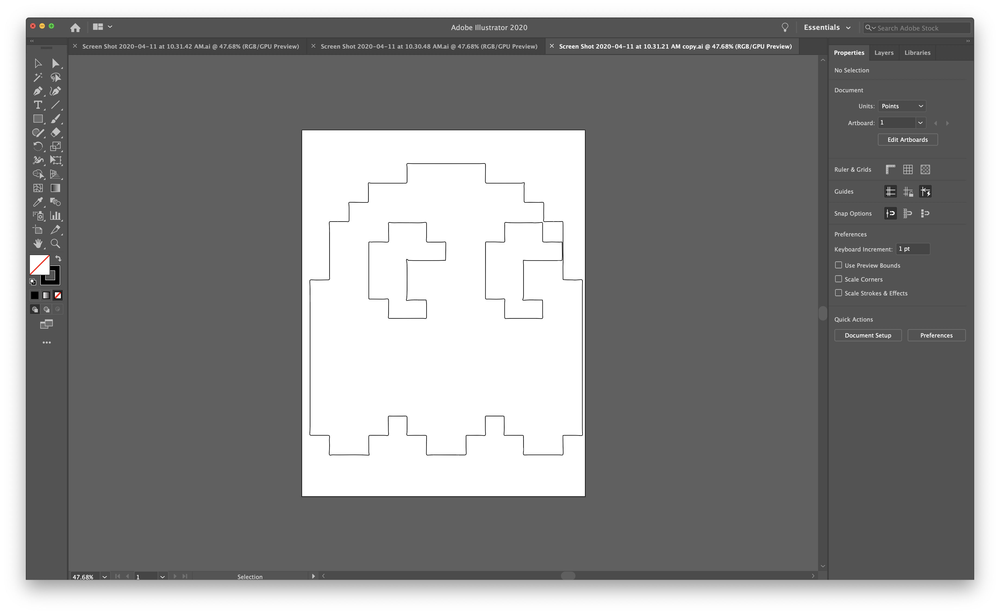
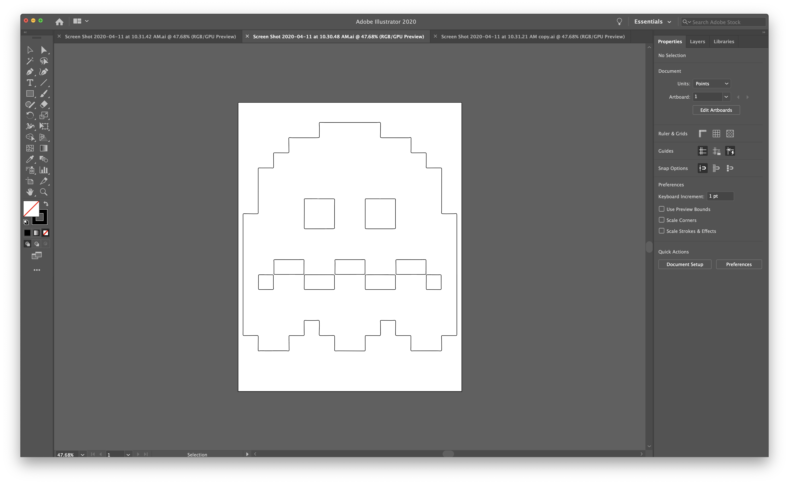
Once the images were traced, I exported them as dxf files to use in Rhino! They looked like these in Rhino:
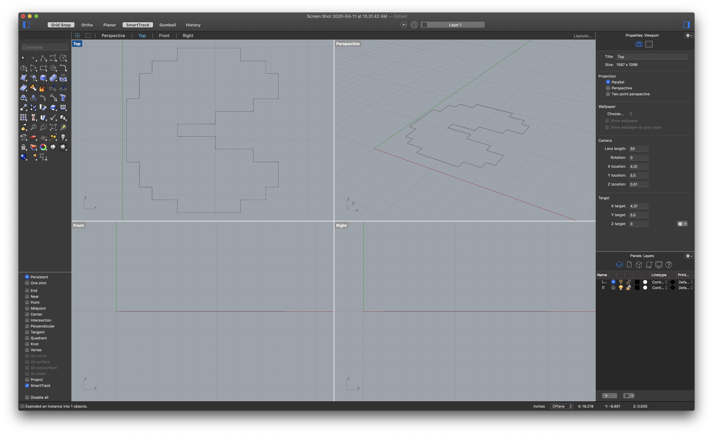
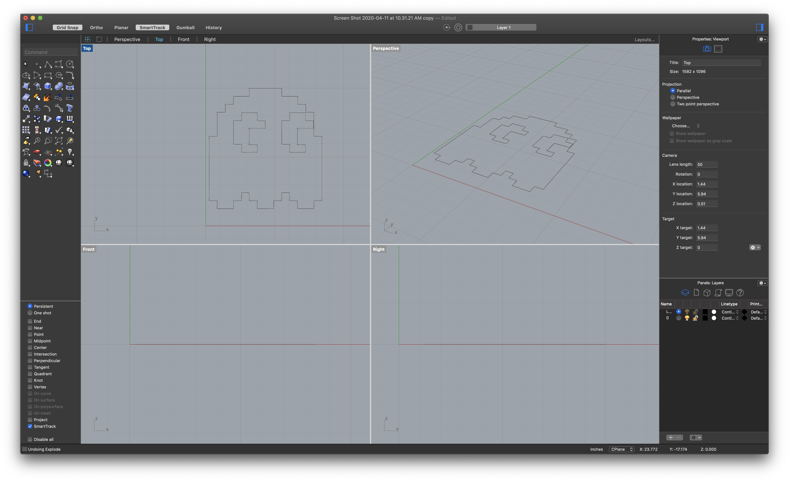
But I somehow didn’t like how they turned out with the pixelated look, so I “exploded” and “Rebuilt” my models with fewer points and started moving the curves around to create some interesting shapes that I liked.
Once I was happy with everything I turned them into solid models files shown here:
3dm files and
.stl files
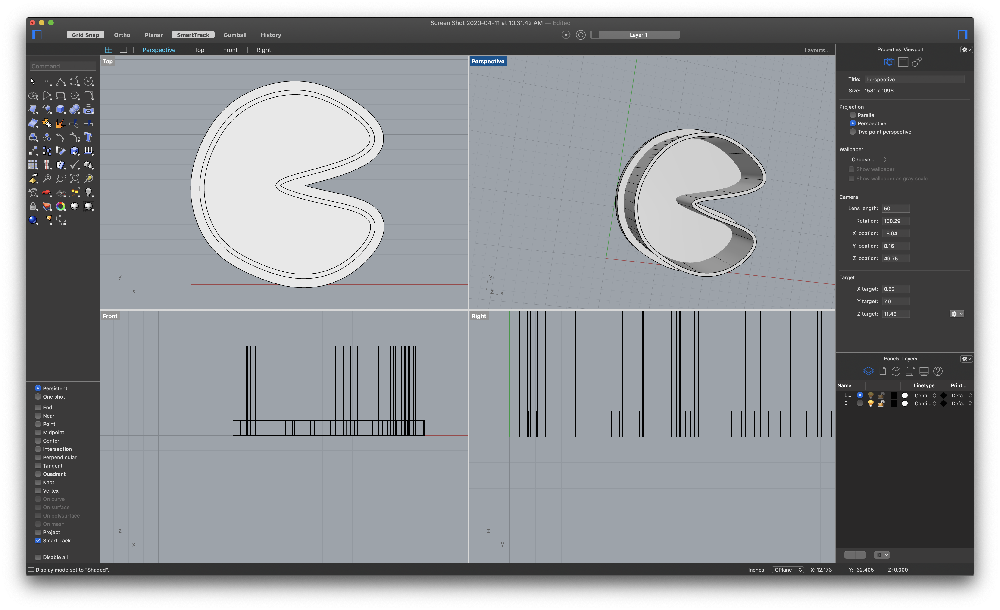
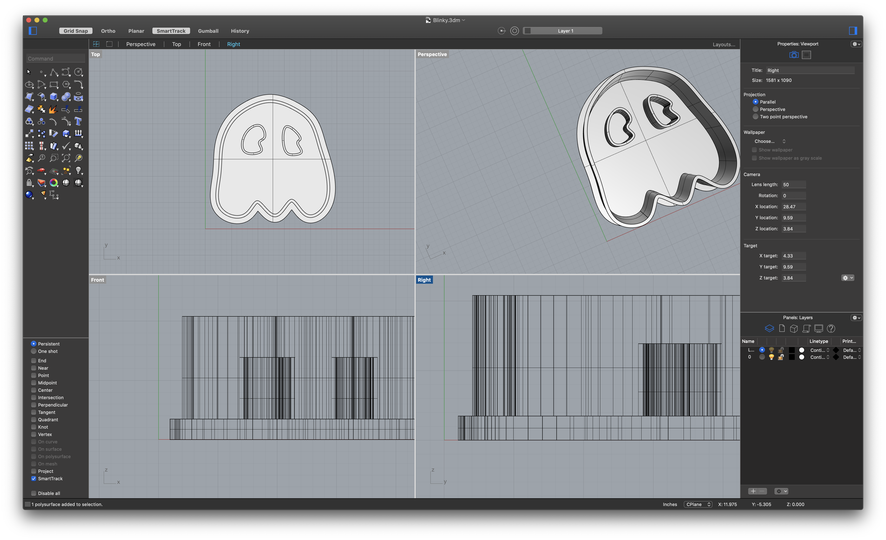
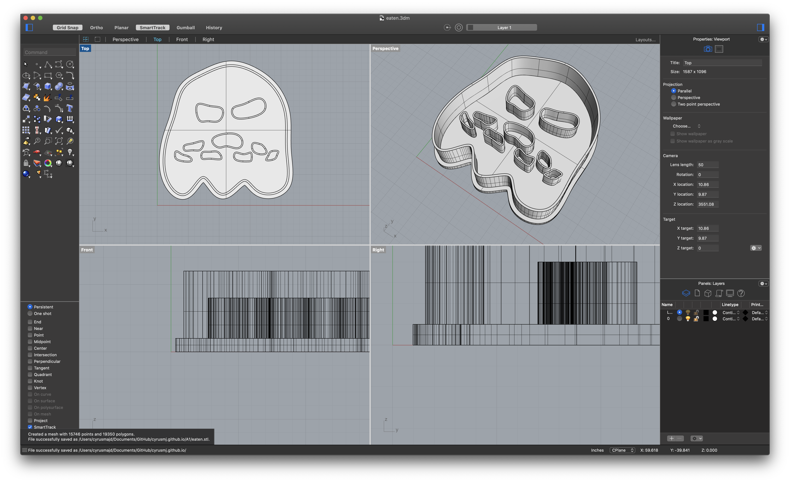
And now they’re 3 happy cookie cutters ready to be 3D printed. Here's a picture of them posing for another family photoshoot! Here's a link to the family photo file for your download :)
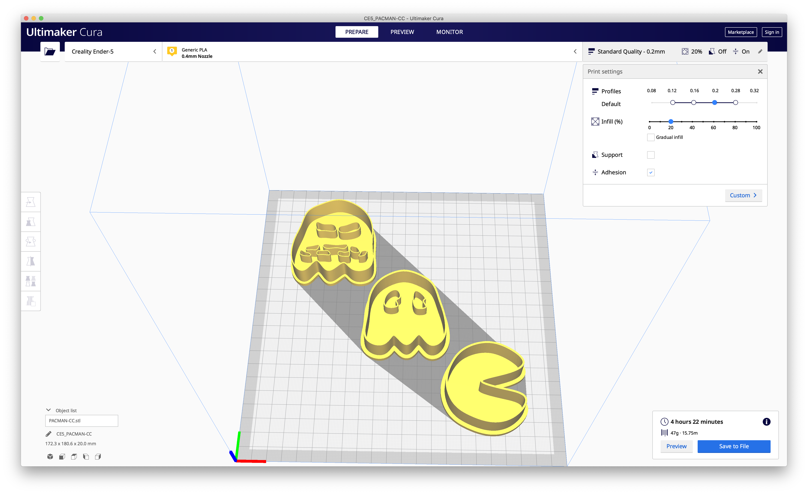